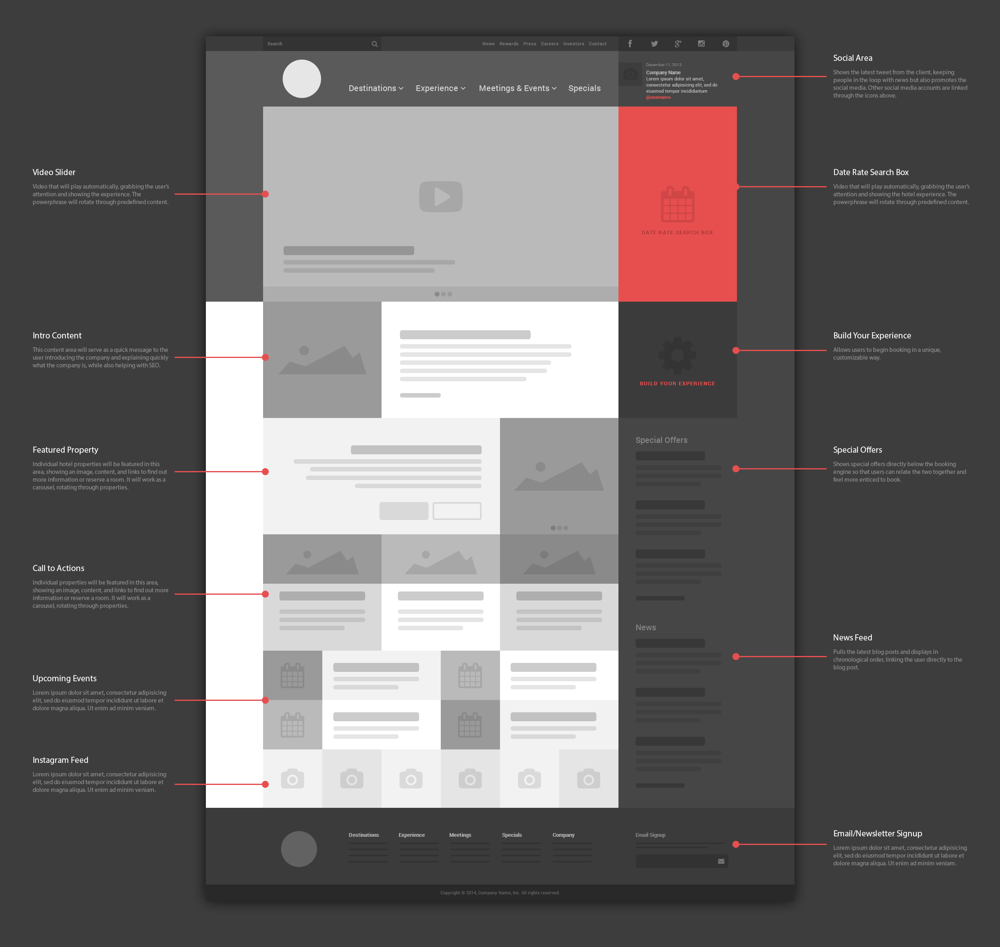

{% include head.html %}
go back to the blog
Hi..
I'm Belhassen Chelbi, a frontend web developer which means ..
if you have an PSD/wireframe  or even drawing in a piece of sheet .. I'll convert it into a website
if you have just an idea
.. I can help you develop it , and make it as a website
If you don't know what kind of design you want for your website
, I can help you with that
then I'll convert it into a working website
Just a simple email on
belhassenChelbi@gmail.com
{% include scripts.html %}

 , I can help you with that
then I'll convert it into a working website
, I can help you with that
then I'll convert it into a working website